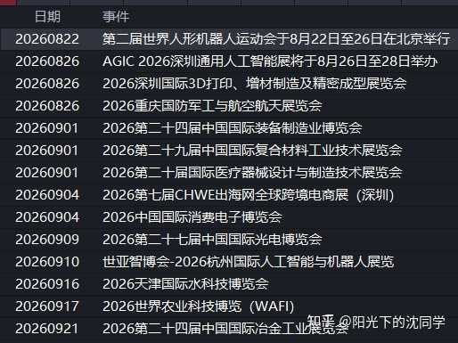
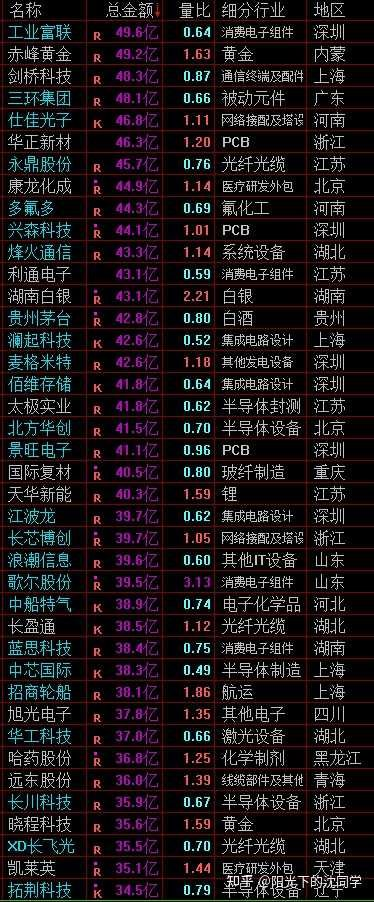
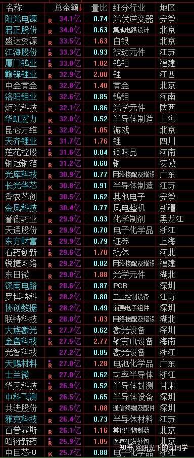

本文核心逻辑在于‘趋势判断优先于个股选择’。作者认为当前A股处于下跌趋势，成交量萎缩是资金离场、缺乏承接力的信号，而非简单的‘洗盘’。其因果传导链为：成交量持续低迷->主力缺乏拉升动力->高位抱团股面临补跌风险->市场进入震荡探底周期。因此，作者主张通过降低仓位（60%以下）和配置ETF来对冲个股流动性风险，将‘现金流’视为当前最重要的防御性资产，等待市场在低位区间（3600-3000点）出现超跌机会再进行左侧布局。
新的一周又开始了，祝大家交易顺利，多多赚钱！
先把未来需要关注的交易重点梳理一遍
1，
成交量最近创新低，这个不太好，因为要维持反弹继续，或者说看继续上涨，去看超预期行情，一定是要成交量有温和放大的，且2.5万亿以上慢慢推进才能实现这些乐观的预期
3950-3650区间会震荡一段时间，如果成交量起不来，后面会打破这个区间，尤其是这一轮主力自救注【本质逻辑】指被套牢的大资金通过小幅拉升股价，吸引散户跟风接盘，从而实现自身减仓或降低亏损。【新手提示】当市场处于下跌趋势时，任何反弹都可能是主力自救的‘逃命波’，而非反转信号。以后，很多高位科技可能会继续大跌，一定要重视风险
我们不需要猜行情，走一步看一步，从市场综合的情况变化，来判断高概率的走势情况最重要
目前还是下跌趋势，且未来会有继续探底的走势，这个概率更大，因为整体走势是弱的，资金面，成交量是弱的
这种情况下一定是下跌概率更大，所以多留现金，没有大跌不要乱加仓会更安全，维持这个判断
2，
低位白马蓝筹，出海龙头，高端制造，红利，新兴行业里面的各种低位优质科技，他们可以在大跌中慢慢加仓，不能太急
他们没有高位核心抱团股，泡沫大的中小盘股那么大的下跌空间，但真的全球股灾，上证指数要继续大跌，很多也扛不住，也会反复探底，或者继续新低，虽然未来他们上涨空间比较大，下一轮牛市核心品种是他们，但吸筹，建仓一定要有耐心，只把握杀跌机会配置，不要拉升去追
3，
仓位配置，资产配置方面可以多通过ETF配置，ETF整体风险更小
个股可能一蹶不振，跟不上行情，ETF其实就是行情好上涨，行情不好下跌，这种反而比大部分股票好，大部分股票是做不到跟上行情的
推荐大家可以看好某一个方向，然后1-2个龙头股+一个成分股好的核心ETF，新手投资者可以重点配置ETF，ETF的仓位应该大于个股
要根据自己的风险承受能力，选股能力来
如果你非常看好一个方向，但你确实不怎么懂选股，没办法深度调研企业，那就选优质ETF，不要为了博弈，多赚钱去勉强自己选个股
这个经验非常重要，和止损果断一样重要
都是保护自己本金的方法，通过减少个股的意外损失，控制回撤来做到保护好本金安全，长期当然复利更稳健
4，
港股方面未来波动会比较大，一方面是一些核心企业的问题，另一方面是恒生科技12月底要调整成分股大改一波问题
这样会导致很多权重港股可能这几个月走势不会很好，他们的机会都在错杀以后的，尽可能多看看
然后就是短期的一些可能新纳入的港股科技机会，这些有炒作波段机会，9月中旬会有具体名单出来，哪一些新兴行业科技纳入恒生科技，到时候12月有几百亿美元的被动资金重新配置仓位，这些时间节点要注意
整体来看，港股未来几个月不好做，机会都在杀跌以后
长期投资者影响不会很大，平时控制好仓位，遇见这种情况，加一点底仓，直接看好的企业错杀，自然也是机会更多
短线投资者会难受一些，期待马上赚钱，几个月内想看见收益的投资者，港股会麻烦许多
我自己的港股核心底仓肯定会继续持有，看看这一波，未来几个月可以跌到什么程度，看好的企业会大跌坚定加仓，短线博弈肯定还是看业绩，产品比较好的科技，新纳入的机会
5，
手里持仓肯定主要配置在长期优质资产上面，慢慢开仓和加仓低位优质品种，总仓位60%以下比较安全
不要在这个位置慢慢加仓做多高位抱团股注【本质逻辑】指前期被机构集中持有的热门板块，因估值过高，一旦市场风格切换或流动性收紧，机构会率先抛售以保住利润，导致股价崩塌。【新手提示】避开近期涨幅巨大、市盈率远超行业平均的个股，这类股票在熊市中是杀跌主力。，不要盲目上仓位，这些都是非常大风险的事情
未来可能很长一段时间都是大跌以后的超跌反弹行情
所以如果大家在没有大跌之前就加仓过多，到时候反弹也赚不到钱，而且可能还没办法解套之前的亏损
仓位控制在牛市做不好，可能没有那么麻烦，现在是下跌趋势，以后如果指数越来越低，仓位还控制不好，是真的会亏大钱
希望大家认真考虑清楚这个问题，每次交易之前都想一想本金安全问题
我认为未来会有比较长一段时间是很难做的，做不到什么合适的机会，可以休息，可以多看看，不要去盲目加仓
珍惜每次上涨，反弹的机会去优化好持仓，去把不太好的个股卖掉，或者换更好的ETF来防守，把总仓位先降下来
关于下跌趋势，和市场风险的问题，最近一直在聊，希望大家多多斟酌，因为真的套在熊市里面，深套一波是很难受的，是大部分投资者受不了的

每天原创不易，读者朋友千万不要忘记点赞支持一下
正所谓先赞后看，腰缠万贯
大家可以先点一波赞，我们再继续慢慢聊
祝点赞的朋友福寿无量，天天开心
成交量整体在下降，资金面大单在减少，中小单子居多，说明大资金在撤退，在休息，在这样的大背景下，控制好仓位，多留现金，等市场大跌再慢慢加仓，是最好的选择，行情难做
其实很多投资者也意识到了这一点，最近大家咨询比较多的也是风险控制方面的问题
交流指数未来的走势情况，持仓是否安全，有没有继续优化空间，哪些持仓可以先卖出不要，这些聊的比较多
就可以看出来，大家也是比较谨慎的，在之前行情上升趋势，成交量3万亿以上的时候，咨询比较多的都是怎么寻找好的行业参与，什么妖股，什么牛股能不能继续博弈这些内容
现在咨询的很多都是控制风险方面的内容，即使是美股，港股方面的咨询也是以长期配置，长期价值为主，说明确实大家也认为全球股市可能未来有大跌，都希望可以把风险控制的更好
应对这样的行情，自然是推荐大家耐心拿住现金为主，长期配置的底仓确定有信心持仓的，现在依旧很便宜的可以不动，其他在崩盘之前做好获利了结，或者买错了做好止损，把现金留出来
然后筛选出来一批优质的ETF和低位的白马蓝筹，红利，新兴行业低位优质科技，这些作为储备，后面大跌就算来了也不要怕，可以针对这些慢慢加仓，慢慢提升仓位
现在就是要确保手里有粮，才能心里不慌，千万不能满仓，高仓位，不能借钱去激进投资，会很危险的
感谢大家的付费咨询，让我感受到了自己知识的价值，也让我每天的分享更有激情
是大家的支持让我每天有更新复盘心得的动力
谢谢！
有什么投资策略想法，调仓换股思路，企业，行业研究这些都可以提前咨询，尽可能提前交流,这样价值更大
最适合新手投资者，上班族，股龄10年内投资者的投资策略分享
美股没有买入机会，底仓继续拿住
黄金最近利好很多，走势很不错，合理底仓可以长期抗通胀持有，停止定投
债券依旧值得闲钱配置，现在现金流是非常重要的资产，债券一定要重视
红利整体位置低，可以关注，很多优质红利企业跌下来是很好买点，尤其是稳定现金流央企，未来会提升分红，值得长期配置
以上这些资产的配置思路都是底仓长期持仓，遇见大跌加仓，平时就是拿住，享受合理分散配置优质资产+耐心持有来实现长期稳定复利
基本上不是买的非常贵，年化7%-15%问题不大，想追求更高收益率就需要仓位控制更好，买的更便宜，不能急着不看估值马上去配置，或者大涨的时候买入，这样都非常影响1-3年复利
不要小看3年内的复利情况和持仓体验，很多投资者对一个资产的态度就是看持仓体验
我之前聊过很多次，投资不仅仅是分析，判断，经验这些，还会被心态影响
如果一个品种，你没有控制好仓位，导致经历过长期深套，那种痛苦会让你没办法长期拿住，会很容易解套就马上卖出，并且以后可能都不想买
很多长期优质的品种，或者好公司，也一样历史上有长期下跌，震荡的走势，如果刚刚好你就重仓持有在这段时间里面，那你很难对这个股票，这个资产有理性的判断
心态太重要的，仓位控制其实就是保护自己的心态
如果你能对黄金，债券，红利，美股，包括各种优质行业龙头股有理性的理解，并且大跌敢买，仓位控制好，长期拿得住，复利是非常好的
这些是我自己长期实战的心得，投资赚钱不容易的，非常不容易，很多都是经验摸索出来的
弯路很多很多，我自己实战过程中也有无数看好或者不看好的行业，企业，最终发现自己看错了，或者调研的内容不够深度，都是经常发生的
有时候遇见的这种情况多了，也会沮丧，也会对一些资产很失望，对自己的投资能力很失望，会有负面情绪
但调整调整，继续学习，继续调研，慢慢的又可以重新恢复状态
因为投资就是这样的游戏
你没办法一直对，一切都在变化，投资努力是基本，但能不能成，这个结果非常曲折
有时候对错还需要好几年才可以意识到，我经常有持仓了很久才慢慢跟踪下来发现不太行的，后面只能调仓换股，止损
这些错误，损失是避不开的，但肯定是经验和成长，你不实战去尝试，永远不知道对错
股市里面赚钱的经验都是在亏损中积攒的，心态很重要，会在失败中一遍又一遍重塑
有时候自己复盘过去的交易，还是会很感慨，会有很多遗憾
所以我认为仓位控制最重要，这样就算是某一些持仓错了，对整体账户影响没有那么大
因为错误有时候真的需要挺长时间才会被意识到，千万不能对某一品种孤注一掷，这个是最重要的经验
主要是不能直接聊企业，股票，代码，不然我真的可以每天拿一些失败的案例出来聊，一直聊换着来都聊不完
各种各样的错误，有把长期优质品种作为短线博弈来做，最终丢了很多长期收益的
有企业调研的时候很好，但其实具体情况很不好的，踩大雷
也有过度自信，在指数高位乱加仓导致的亏损
当然也有对估值错判，对行业看走眼的
就是各种各样的实战错误，才有了越来越细腻的仓位控制，风险意识
我永远不会认为投资容易，因为每次交易肯定都是想的清清楚楚的，但最终就是很多意外亏钱，就是会有错误
你做不好仓位控制，止损慢了，损失就会更大
对错误的接受在投资领域是没办法的，不然只会亏的更多，只能接受，重新审视，接受失败的经验教训，后面再重新出发
经常看见大家留言讲，我聊的东西挺多，很多分享比较深度，实际上就是实战经验多，遇见的各种亏损比较多，因为经历过，所以明白的多一点
不是我过度谨慎，是我一直都很谨慎，还是依旧会有很多做不好的地方，所以我没办法在投资这样的高风险领域不去非常非常在意风险
这些大家在实战久了自然会有体会，投资就是很难的，除非你天赋异禀，不然就像我一样的普通投资者，你只能通过踩坑，接受，学习，成长来不断进步
心态差一点，随时随地可能会放弃
好在我整体心态不错，再后悔，再痛苦不会放弃投资，最多是每次复盘想起来会比较难受，痛定思痛以后还是可以继续做下去
最起码，往好处想，有了各种错误的经验，还可以写东西分享给大家，让更多人可以少走弯路，也是功德一件
以后想办法多分享一些失败的投资经验给大家，尽可能在合规，不聊个股，代码的情况下，也可以完整的复盘错误，我认为这样是非常有意义的事情

该表展示了不同指数的估值水位。核心逻辑是‘估值锚定’：当指数处于‘低估’区间时，安全边际高，适合长期配置；处于‘泡沫’区间时，下跌空间巨大。新手应利用此表作为仓位管理的参考，而非买卖的唯一依据。
大家有任何投资疑问，有什么想交流的都可以付费咨询，想单纯支持一下也可以
【在知乎上我的主页咨询即可，没有任何群，不搞私下小圈子】
家庭资产长期稳健配置方案分享，仓位优化，估值分析，行业分析，心态调整，各种投资学习技巧都可以咨询
大家的支持和尊重是我创作的最大动力
感恩大家每天的付费咨询和打赏，感谢大家对知识的尊重，感谢大家对我的支持
欢迎提问
适合职业投资者，10年以上经验老股民，基本功极其扎实投资者的实战分享
继续聊实战
成交量越来越低，要警惕成交量不足，未来高位股和高位板块崩盘风险
千万不要在这种下跌趋势+成交量低迷的时候去追高
多关注低位优质方向，我自己实战策略维持不变，总仓位上限控制在60%以内
目前实际依旧总仓位50%以下，前段时间已经做了大幅减仓，获利了结了一波
后面随着成交量走低，行情低迷，慢慢加一些低位优质方向，新兴行业的科技，白马蓝筹，红利，出海龙头，高端制造这些都长期看好，低位优质企业后面如果大跌会慢慢加
现金目前是最重要的仓位，所以不会快速加仓，没有大跌会维持持仓不变，继续上涨也会再继续减少持仓
整体会比较重视风险，全球股市估值不低，这个位置大家应该减少个股持仓，减少高位高估值品种持仓
增加债券，现金仓位，慢慢加仓低位优质方向
千万不可借钱，满仓，现在这种行情潜在风险不小，不可激进交易
把仓位优化好，不是非常值得现在加仓或者长期持仓的品种，都可以暂时不买或者现在不持有
希望大家在行情真正崩盘之前，是仓位优化好的，是手里没有高风险持仓的，是锁定好了利润，做好风险管理的
因为整体行情是下跌趋势，未来还会不断探底，并且如果全球股市表现不加，或者有什么利空的情况下，3600附近是守不住的
3950-3650区间只是现在的一个运行区间，不是真正底部，这个需要反复重申
这个区间震荡到了一定程度，主力自救结束，大概率要继续杀跌
除非现在不是下跌趋势，除非是趋势判断错误，那确实有可能3950-3650区间震荡结束以后继续进攻，开启新的行情，这个是可能的
但结合目前情况，我自己的判断是上升趋势之前守不住4150就已经结束，我认为现在是下跌趋势，所以下跌趋势来看不可能3950-3650区间可以结束一整轮熊市调整
历史上A股从来没有这么温柔的熊市，会一直震荡下跌很久，且深度每次都超预期
我们就不按照超预期下跌来看，也没办法看那么远，不考虑极端的3000点以下行情
当然确实过去每次A股熊市都到了3000点以下，都超预期杀跌了，都对投资者非常不友好，让大部分投资者绝望了，才结束熊市
那么这一次我不想那么悲观，毕竟24年的924之后，平准基金加入之后，我认为官方是更加重视A股的，我认为这一次熊市可能会不一样，暂时这样看
下跌趋势是下跌趋势，不过不想这一次也看那么低，先不看3000点以下，认为3600以下会到，3600-3000区间会是这个下跌趋势最终的低点，会在3600-3000区间调整结束，走出下一轮牛市行情，这个概率偏大
按照这个看法来做，现在肯定是需要好好控制仓位的，需要好好重视风险的
你就算是最乐观的投资者，也应该3600以下再寻求满仓，借钱肯定是不能不好的，这个是原则底线问题
就是聊满仓的时机，一定是要在低位区间会比较好
最低点猜不到，低点是一个区间，而且变数很多，我只能尽可能按照我的经验去做一个综合判断，走一步看一步
后面有的新的变化再慢慢修正
现在可以确定的是我自己没办法看上涨趋势，看不见上涨行情继续的大概率可能性，这种概率低于30%
这就是我总仓位上限控制在60%以内的原因
投资要有自己的风险控制判断，并且坚持自己的盈利模式，不能人云亦云，根据自己的盈利模式去慢慢调整，才会有成长，才能明白自己对在什么地方，错在什么的地方
很多投资者是完全看市场舆论，或者身边同事说怎么看，自己就怎么看，这样确实就不存在成长，完完全全是盲目的状态
这样对了，错了都没有自己的一个思考过程，是无效的投资，是没有积累和成长的投资
大家想有进步，就必须有自己的一套理解和判断，再根据实际走势来修正，来学习成长
这个过程坚持下去，自然会投资水平越来越高



风险提示：股市有风险，入市须谨慎
今天是坚持写复盘笔记的第1506天【每日打卡】
下面是我自己多年来的一些重要的心得感悟，分享给大家，会不定期增加内容
1，
长期投资成功的关键是稳定的情绪和沉稳的性格，这些比过人的天赋更重要
2，
最终我们穷其一生获得的一切经验、知识和所有财富都需要转化为自身的品德修养，不然获得越多失去越多
自身的修养是留住各种财富最好的容器，富裕一时不难，富裕一生不易
珍惜获得的一切，保持初心、慈善、知足，让自己的德行和财富共同成长，才能方得始终
3，
古之成大事者，不惟有超世之才，亦必有坚忍不拔之志
想成为优秀的投资者一定要持之以恒，不断学习，反思，总结，在投资中获得的各种经验最终都会成为你财务自由的砖瓦
4，
再高的智商也一样会被情绪一瞬间冲垮
大部分的亏损都来源于投资者的冲动和情绪化交易，学会控制自己的情绪和心态才能长期稳定的复利
5，
富在术数，不在劳身
一定要多思考，任何时候想清楚了再交易，漫无目的的交易，只会多做多错
6，
利在势居，不在力耕
投资赚钱主要靠把握时机，没有机会就休息，多留现金
做可以让自己心安的投资，便是对于你来说最好的盈利模式
7，
谨记：贪念起，万念俱灰！
控制住了风险，利润会随之而来
富贵险中求，也在险中丢
求时十之一，丢时十之九
仓位情况【不推荐模仿】
短线博弈仓位：8%
长线+短线总仓位尽可能低于60%，这样更符合当前行情的风险程度
长线资产配置目前个人分散持有：各种债券ETF+各种核心红利ETF+美股ETF+黄金+优质REITS+长期看好的优质企业+核心ETF
美，港，A股长线+短线所有股票持仓投资方向配置比例参考：
金融：【保险，银行，券商】15%
消费：【新消费+龙头品牌消费+游戏】：28%
生物医药：12%
AI产业链：10%
能源，动力【储能，电力设备，电力方向】：6%
高端制造【半导体，机器人，航天航空，军工，出海龙头】：25%
周期【化工化纤，新材料，核心矿产】：4%：
【每3-6个月更新一次】
最新更新时间2026年6月
每周都要和读者朋友声明一遍：
有任何问题都可以在知乎上付费咨询，什么都可以问，知无不言
我只在知乎分享，不卖课，没有其他任何公众号，群，星球，谨防上当受骗！
其他平台很多都是别人伪造的号，不会私底下叫你们加什么小圈子，从来不搞这些
任何私下联系你们说认识我的人，想和你套近乎或给你推荐什么东西，或拉你进什么小群，这些都是骗子，都千万不要相信
不要去理睬网上问你股票，关心你投资有没有赚钱的人，都肯定不怀好意，自己要有辨别能力
我是不会私下联系大家的，可能有伪造我头像，网名的人做这种事，或者伪造成为我朋友，认识我的人做这种事，大家自己要看清楚
每天原创不易，谢谢大家各种支持！
全文总结：当前市场处于‘缩量震荡下行’的防御阶段，核心策略是‘现金为王，控制仓位’。新手避坑法则：1. 严禁满仓，总仓位控制在60%以下是保命底线；2. 放弃‘赚快钱’心态，不要在下跌趋势中频繁短线博弈；3. 优先选择ETF进行资产配置，避免个股踩雷；4. 只有在市场出现恐慌性大跌、估值进入低估区间时，才是分批建仓优质资产的良机。记住：投资的本质是概率管理，在胜率低时选择休息，就是最好的盈利。

{kind=link}
继续支持，继续收藏起来慢慢看，周一非常不想上班，很想摸鱼
最近老沈一直在提示行情可能走坏，让注意风险，小心以后的大跌行情，但我现在是满仓
虽然大部分都是大家看不上的红利养老股，但还是有点焦虑，不知道大家现在仓位怎么样，我有点想卖到一部分持仓，留点钱以后大跌买了，但又怕卖了以后持仓大涨，因为毕竟之前大跌我的这些养老持仓都是大涨的，现在非常纠结，我总是没办法把仓位控制很好
我知道自己没那个择时本事，猜不到什么时候是底，也猜不到什么时候是顶，所以我是想就这样拿住这些养老股不动的，大不了后面把短线博弈的一些港股买了，后面就躺平，等大跌再加养老股
我投资的长期目标就是每年能有20万也是分红，不用为了生计忍气吞声
而且今年也开始做了证转银，开始学习这样的稳健投资思路，但还是没办法仓位控制的那么好
不知道这一轮熊市大跌到底会跌到什么地方，希望我的持仓可以熬得住，目前我只对我的医药持仓比较有信心，因为医药是我唯一能力圈，其他都有点担心
一周笔记
1、 成交量最近创新低，如果成交量起不来，未来会打破3950-3650区间，需要多注意风险，多留现金。
2、 低位白马蓝筹，出海龙头，高端制造，红利，新兴行业里面的各种低位优质科技，可以在杀跌时候加仓，多用ETF来配置。
3、 港股未来波动会比较大，一部分是核心公司的问题，另外一部分是恒科调整成分股的问题，机会都在杀跌以后
4、 现在是下跌趋势，风险在加大，仓位一定要控制好，盲目上仓位有可能亏大钱。
5、 美股没有机会，底仓继续拿住；
6、 黄金最近利好比较多，拿住底仓，停止定投
7、 债券继续值得闲钱配置
8、 红利整体位置低，跌下来就是很好的买点，尤其是稳定现金流的央企。
之前定投的黄金现在看着有10%左右的收益，看着就挺开心的。
跟着老沈学习，终于管住手了。
继续定投红利、恒科和消费ETF，苟着等机会。
低波，价值，红利，现金流都要配置，这个老沈之前说过，我也是分散买的，可以咨询一波老沈，看看具体怎么选，也算是支持支持
[doge]老沈短线还没抄底，是等前低，还是等新低
老沈其实已经买挺多了，看8%仓位了，之前2%
8/24 老沈复盘概括（复盘 8/21 周五）
市场判断： 成交量最近创新低，维持反弹需要 2.5 万亿以上温和放量，现在不具备。3950-3650 区间会震荡一段时间，但成交量起不来后面会打破区间；确认目前是下跌趋势，未来还会继续探底，这一轮主力自救结束后高位科技可能继续大跌。他强调3950-3650 只是当前运行区间，不是真正底部—— 按他的判断，3600 以下会到，3600-3000 区间才是这轮下跌趋势的最终低点，也是下一轮牛市的起点（看涨概率 < 30%，所以总仓位上限 60%）。
核心观点： 多留现金，没有大跌不要乱加仓。低位白马蓝筹、出海龙头、高端制造、红利、新兴行业低位优质科技可以大跌中慢慢加仓，不能太急、不要拉升去追。重点推荐主配 ETF（1-2 个龙头股 + 一个核心 ETF，ETF 仓位应大于个股），经验同止损一样重要。港股未来几个月不好做：恒生科技 12 月底成分股大改，9 月中旬出名单，权重港股机会在错杀以后，新纳入科技有波段炒作机会。反复重申不借钱、不满仓、不激进。
今日操作（方向延续）： 短线仓位 7%→8%（+1%），总仓位实际 50% 以下（上限 60%）。前段时间已大幅减仓获利了结，现在随着成交量走低慢慢加一些低位优质方向（新兴行业科技、白马蓝筹、红利、出海龙头、高端制造），没有大跌就维持持仓不变，继续上涨还会再减仓。核心逻辑：现金是目前最重要的仓位，把仓位优化好、锁定利润，等真正大跌再慢慢加。
其他资产： 美股底仓继续拿住，无买入机会；黄金最近走势不错，停止定投，合理底仓长期抗通胀持有；债券一定要重视、继续闲钱配置（现金流是重要资产）；红利整体位置低可关注，尤其稳定现金流央企未来会提升分红，值得长期配置。
一句话： 成交量创新低 + 下跌趋势确认，现在最重要是控制好仓位、多留现金 —— 低位优质方向只在大跌时慢慢加，真正的底在 3600-3000 区间，等那时候再谈满仓。
太强了，真怕沈大不更新了，那以后没法玩了，但是大佬一般会复盘，每日行情算是沈大的复盘了
老沈的每天念经对我来说非常重要，所以我都尽可能支持老沈，希望老沈可以坚持下去
上周四满仓四川黄金+湖南黄金，上周五加仓煤炭，这波操作给自己打满分[捂脸]
如果沈同学也写一本《股票大作手回忆录A股版》那就太棒了
《聪明的投资者中国版》[飙泪笑]